Web je již jen v režimu pro čtení a není možné přidávat nové komentáře nebo dotazy do fóra. Díky za přízeň.
Main menu
You are here
Ohňostroj
24. October 2010 - 16:34 — Lukáš
Vytvoříme si nový obrázek s rozměry 800x800px a vyplníme jej černou barvou. Eliptickým výběrem nakreslíme přes celé plátno kružnici.
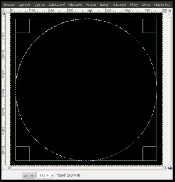
{kind=link}
Přejdeme na Filtry → Šum → HSV šum a nastavíme takto:
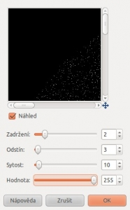
{kind=link}
Přejdeme na Filtry → Rozostření → Rozostřit.
Poté přejdeme na Barvy → Úrovně a nastavíme je takto:
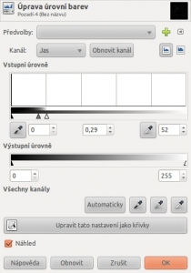
{kind=link}
Klepneme na Vybrat → Nic. Přejdeme na Filtry → Zkreslení → Polární souřadnice. Zde odškrtneme volbu „Do polárních“, ostatní volby necháme tak, jak jsou. Dostaneme toto:
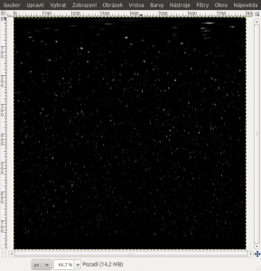
{kind=link}
Přejdeme na Vrstva → Transormovat → Rotovat o 90° doprava.
Přejdeme na Filtry → Zkreslení → Vítr a nastavíme jej takto:
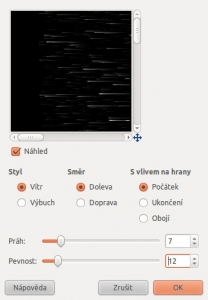
{kind=link}
Teď vrstvu otočíme doleva přes nabídku Vrstva → Transformovat → Rotovat o 90° doleva. Přejdeme na Filtry → Zkreslení → Polární souřadnice. Zde zaškrtneme volbu „Do polárních“, ostatní volby necháme tak, jak jsou.
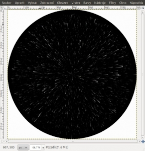
{kind=link}
Nástrojem Plechovka vyplníme bílý prostor.
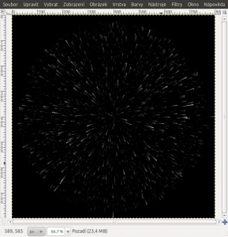
{kind=link}
Přejdeme na Barvy → Úrovně a nastavíme je takto:
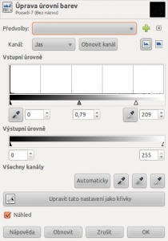
{kind=link}
Vrstvu duplikujeme (Vrstva → Duplikovat vrstvu). Horní vrstvě nastavíme režim na „Součet“. Přejdeme na Filtry → Rozostření → Gaussovské rozostření. Obě hodnoty nastavíme na 10.
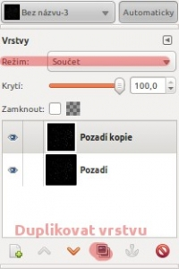
Rozostřenou vrstvu znovu duplikujeme
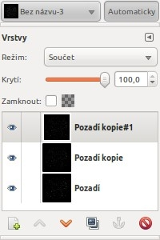
{kind=link}
{kind=link}
Znovu přejdeme na Filtry → Rozostření → Gaussovské rozostření. Hodnoty opět nastavíme na 10.
Přejdeme na Obrázek → Zploštit obrázek. Nyní přejdeme na Barvy → Vyvážení barev. Zde si nastavte libovolnou barvu.
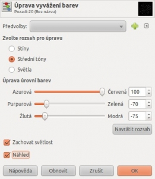
{kind=link}
Vrstvu znovu duplikujeme a nastavíme režim na „součet“. ("Přidávání" pro verzi 2.8)

hotovo
Web je již ukončen. Nebude zde přibývat žádný nový obsah. Případné dotazy prosím na l.bacovsky(a)outlook.cz
Comments
Popravdě, kdybyste to nechal
barva
mě to připadá dobrý, jsem
Součet.
Režim se nastavuje v okénku s
Nezobrazeno!
Pokud tomu dobře rozumím,
Děkuju!!
Re: Ohňostroj
Re: Ohňostroj
Re: Ohňostroj
Re: Ohňostroj
Re: Ohňostroj
Re: Ohňostroj
Add new comment